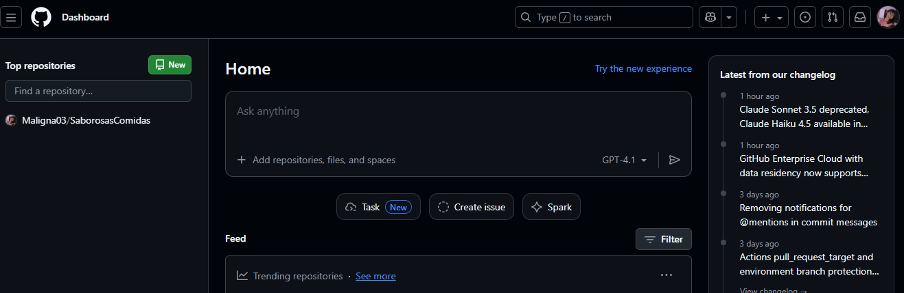
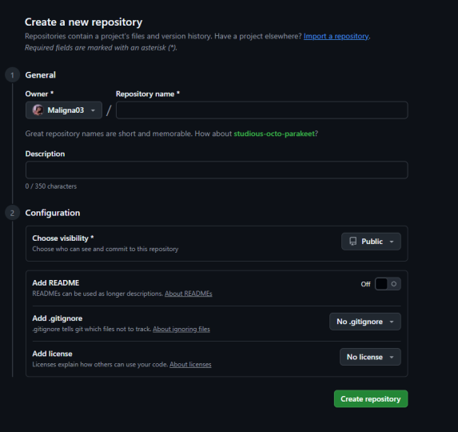
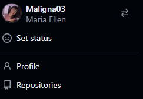
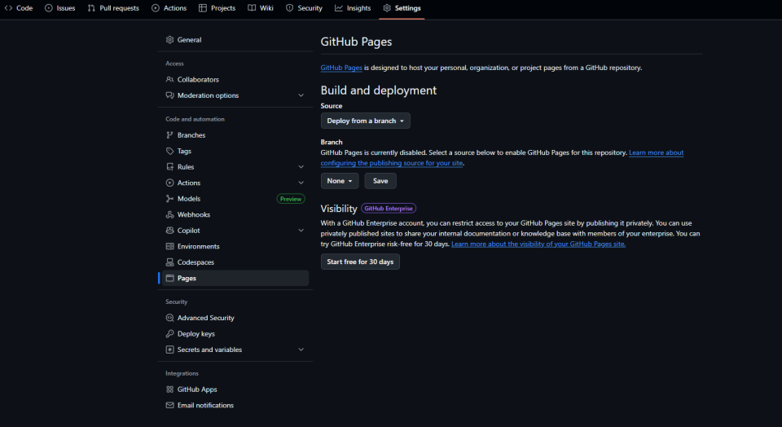
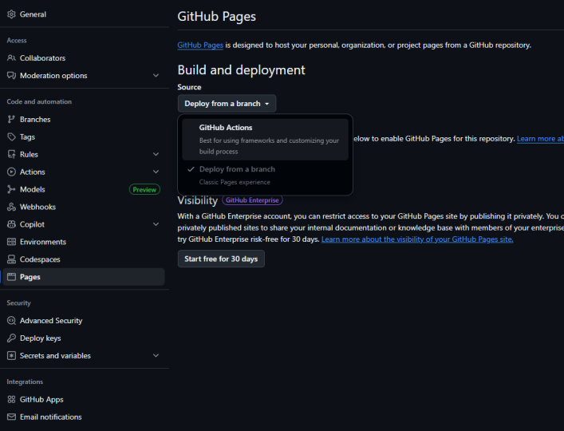
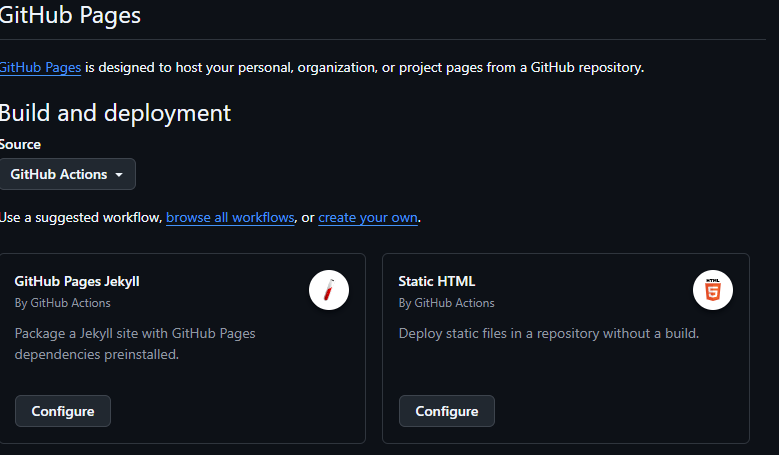
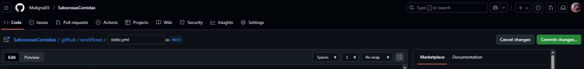
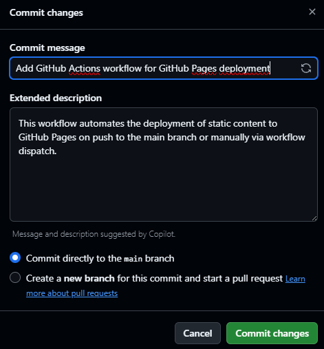
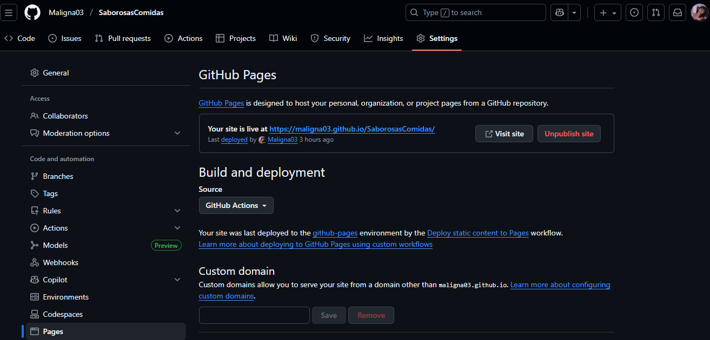

Infograma passo a passo
Etapas para Criar um Aplicativo no Replit
1

Apertar em new
2

De um nome ao seu repositorio e crie
3
Depois vai em repositorio e clique no projeto
4
Vá nas configurações e aperte em pages
5

Mude para GitHub actions
6
Aperte em statics HTML
7
Depois aperte em commit
8
Depois aperte novamente e vá para o repositorio e configurações novamente
9
agora pegue o link e teste
9
Mobile- teste

9